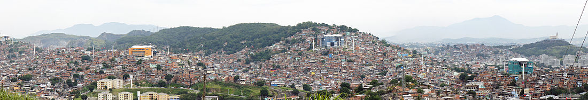
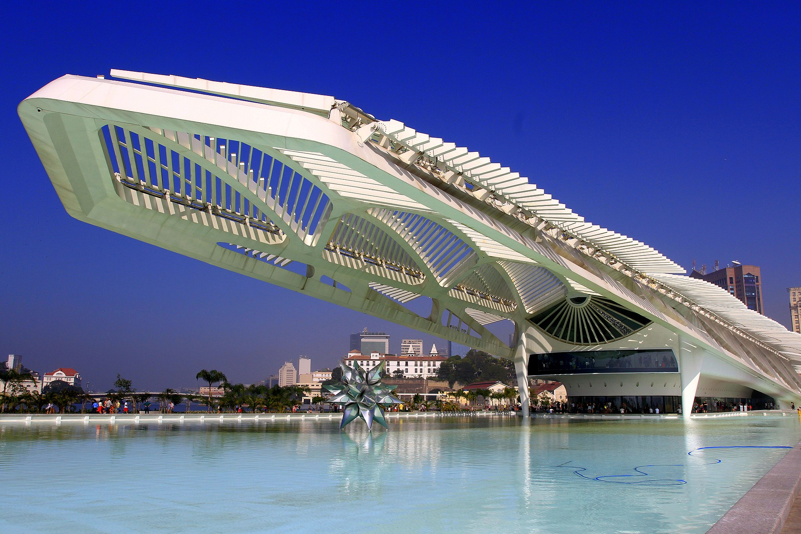
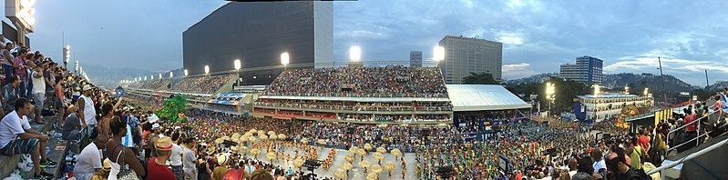
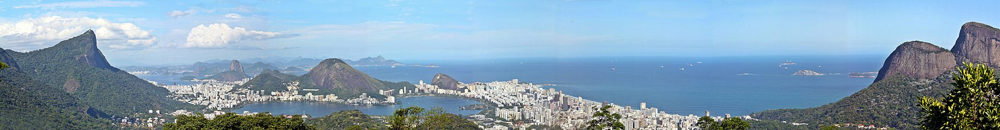

HOME
|
SOBRE
|
GALERIA
|
CONTATO
Galeria

Vista panorâmica do conjunto de favelas chamado Complexo do Alemão, com cerca de 70 mil habitantes (2010). A imagem mostra as linhas do sistema de teleférico entre as estações (da esquerda para a direita) Palmeiras, Itararé, Alemão, Baiana e Adeus, de onde a foto foi registrada. De acordo com dados do Censo de 2010, aproximadamente 22% da população da cidade vive em favelas. Ao fundo, à direita, é possível observar a Igreja de Nossa Senhora da Penha.

O Museu do Amanhã é um museu construído no município do Rio de Janeiro, no Brasil. O prédio, projeto do arquiteto espanhol Santiago Calatrava, foi erguido ao lado da Praça Mauá, na zona portuária (mais precisamente no Píer Mauá). Sua construção teve o apoio da Fundação Roberto Marinho que teve o custo total de cerca de 230 milhões de reais.

Carnaval do Rio de Janeiro, no Sambódromo da Marquês de Sapucaí.

Panorama da cidade com destaque para as montanhas do Corcovado (esquerda), Pão de Açúcar (centro, ao fundo) e Dois Irmãos (direita) Fotografia tirada a partir da Vista Chinesa, no Parque Nacional da Tijuca.
Todos os direitos reservados